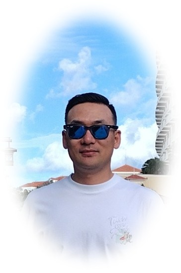

Seongho Ahn
Principal Investigator · Professor
Education
- Ph.D. in Coastal Engineering, Georgia Institute of Technology
- M.S. in Coastal Engineering, Hanyang University
- B.S. in Civil Engineering, Hanyang University
Experience
- 2026 – Present · Assistant Professor, Hanyang University
- 2023 – 2026 · Assistant Professor, Jeju National University
- 2019 – 2023 · Senior Research Scientist, Sandia National Laboratories, USA
- 2011 – 2014 · Engineer, Samsung C&T
Activities
- 2026 ~ International Electrotechnical Commission (IEC), Technical Committee 114
- 2026 ~ International Electrotechnical Commission (IEC), Maintenance Team 62600-101
- 2026 ~ 2028 국토교통부, 중앙건설기술심의위원회, 제 19기 소위원회 위원
- 2026 ~ 2028 제주에너지공사 제안서 평가위원
- 2025 ~ 2025 해양수산부, 제 7기 기술자문위원회 위원
- 2025 ~ 2025 국토교통부, 중앙건설기술심의위원회, 제15기 설계심의분과위원회 위원
- 2023 ~ 2025 해양수산부, 제 6기 기술자문위원회 위원
- 2023 ~ 2025 해양수산부, 제 4기 신기술 활용 심의위원회 위원
Office : Engineering Building 4, Room 404-2
Mail : sahn03@hanyang.ac.kr
Tel : 031-400-5571